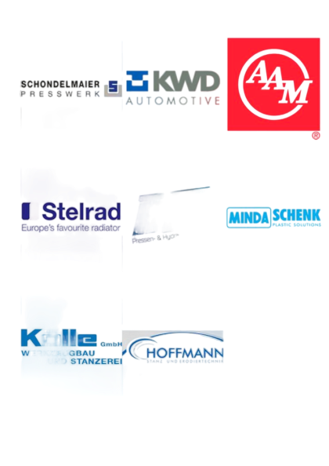

Branche / Segment
Kategorien je Projekt, z. B. Umformtechnik, Schwerindustrie oder Anlagenbau.
Referenzen
Diese Seite ist bereits als skalierbares Referenz-Layout vorbereitet. Namentliche Kundenfreigaben, Zitate und Cases werden nach Verifizierung ergänzt.

Struktur
Kategorien je Projekt, z. B. Umformtechnik, Schwerindustrie oder Anlagenbau.
Dokumentation je Auftrag: Reparatur, Verstärkung, Prüfung und Vor-Ort-Bearbeitung.
Ausgangslage inkl. Schadensbild, Zeitfenster und Produktionsanforderungen.
Ablauf je Einsatz: Analyse, De-/Remontage, Bearbeitung, Schweißarbeiten, Kontrolle.
Messbare Resultate wie Wiederanlaufzeit, Stabilisierung und reduzierte Stillstände.
Veröffentlichungsstatus je Referenz inklusive Namens- und Zitierfreigaben.